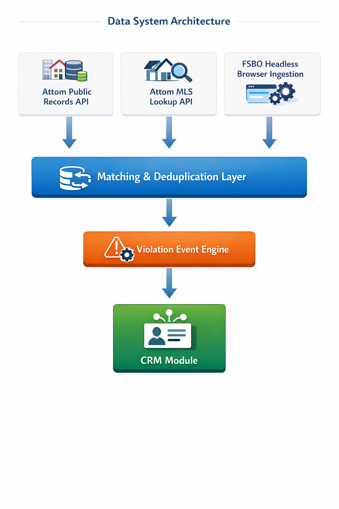
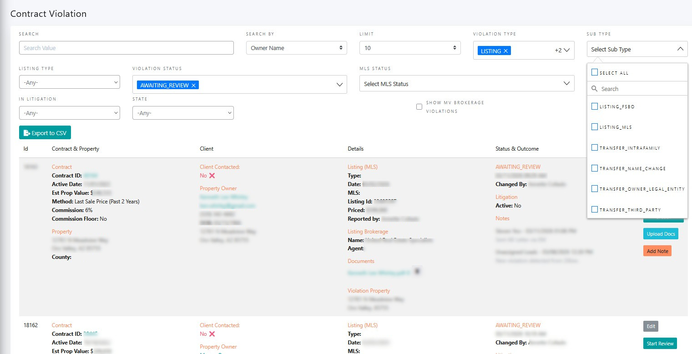
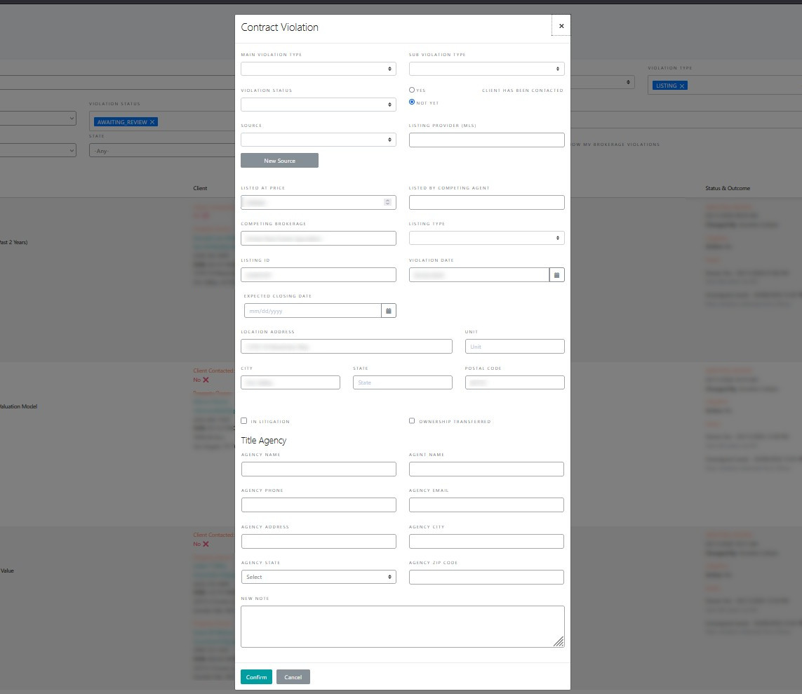

Residential PropTech · Platform & Data Systems
Designing a unified three-source monitoring platform that detected contract breaches in real time — eliminating months of manual audit work and shifting enforcement from reactive to proactive across a 40,000-property national portfolio.
The Business Context
The core product being offered by a residential PropTech startup was the proprietary right-to-list agreement. The premise of this product was that homeowners would agree to work with this brokerage in the future when they were ready to sell in exchange for a cash payment. This business model only works if the clients honor their agreements. Unfortunately, it became evident that this was not always the case.
In some cases, clients were entering into listing agreements with competing brokerages, in others, clients were selling properties off-market entirely. Each breach represented a direct financial loss because the business had already paid origination fees including the original client payment and other costs associated with underwriting and sales. In cases where properties already transacted, there was very little recourse to recover these costs. Therefore, early intervention was critical in order to attempt to step in and enforce the brokerage's right to represent the seller in their transaction.
At the outset, the monitoring approach was rather straightforward: cross-reference the portfolio against existing MLS data streaming through RETS connections to check for listings while also performing monthly audits of public ownership records to verify the title had not changed. In practice, this was a tedious and laborious process, and the fact that each MLS only offered regional coverage added a costly development component to geographic expansion.
Manual Process vs. Automated Platform
| Dimension | Manual Audit Process | Automated Platform |
|---|---|---|
| Monitoring Frequency | Monthly | Continuous |
| Portfolio Coverage | Partial | Complete |
| Data Sources | RETS (select markets) & Manual Title Search | Public Records API, MLS API, FSBO Feed |
| Breach Detection Timing | Majority post-close | Real-time / near real-time |
| Analyst Time Per Cycle | 3–5 days/month | Eliminated |
| Monthly Hours | 60+ | Minimal |
| Developer Dependency | Consistent RETS integrations per market | None — API scales with growth |
| FSBO Visibility | None | Covered |
| Off-Market Detection | Manual title search | Automated deed monitoring |
| False Positive Handling | Manual | Automated state logic |
The Problem
Within the first few years, the business scaled from the initial 3 markets into 33 states. Simultaneously, the portfolio was growing at a rapid rate. The manual audit process required researching each property individually through county records or third-party tools to verify ownership, then aggregating and reporting on those results. Altogether, this was taking anywhere from 3–5 days each month and consuming analyst capacity that grew with each new market.
On the MLS side, the continual onboarding of RETS feeds had its own challenges. MLS data can be regionally fragmented with multiple providers overlapping in the same geography. On top of that, there was no standardized integration — each feed required custom mapping as well as licensing compliance coordination and reviews. Every new market meant a new integration negotiation and a development cycle that couldn't keep pace with the business's expansion rate. Beyond that limitation, the MLS coverage didn't include FSBO listings, meaning there was another coverage gap that remained unaddressed.
The monitoring infrastructure the business had built was already failing to cover the portfolio it had. Projecting forward, it was clear this approach would require significant ongoing developer resources just to stand still, while leaving material coverage gaps that represented direct legal and financial exposure.
My Role
I had been supporting the underwriting team on the monthly deed audits and understood the manual process intimately — its coverage gaps, its labor intensity, and its fundamental inability to scale. As data product manager, I was also uniquely positioned to understand what was available across vendors, how public records were structured across different jurisdictions, and how MLS data flowed and where its access constraints were.
I conceived the unified monitoring platform, identified and negotiated the vendor relationships that made it possible, secured executive buy-in, and drove the product definition from data architecture through CRM workflow logic. The engineering team built what I defined.
Data System Architecture

Three-source monitoring architecture — Attom public records API for ownership verification, Attom MLS lookup API for listing detection, and headless browser FSBO ingestion — flowing through a unified matching and deduplication layer into the violation event engine and CRM workflow module.
The Approach
Replacing the manual audit. The core insight was that the monthly manual audit needed to be replaced entirely by a property-level public records API with monthly county recorder refreshes. I identified Attom Data as the vendor capable of providing both the public records API and, critically, something more difficult to obtain: an MLS listing status lookup via API. MLS data is heavily protected and most vendors restrict its use to published listing applications. By demonstrating that our use case was monitoring rather than publication, I was able to negotiate a listing status based API endpoint. This non-standard arrangement eliminated the need for individual RETS integrations as we entered new markets — that single vendor relationship replaced two expensive, slow, manual processes simultaneously.
Closing the coverage gaps. For Sale by Owner listings were invisible to both MLS and public records. I sourced an FSBO lead vendor and worked with engineering to design a headless browser solution that periodically downloaded bulk FSBO listings and loaded them into our database for cross-referencing against the portfolio. It wasn't elegant, but it closed a meaningful coverage gap that had previously gone unmonitored entirely.
Property matching and false positive logic. Each data source presented its own identity resolution challenge. Matching a monitoring signal reliably to the correct portfolio property required sophisticated matching logic and validation rules that I defined in collaboration with the engineering team. Equally important was the event logic governing when a signal constituted a reportable violation:
This logic was the difference between a monitoring system and a reliable operational tool. Without it the legal team would have been buried in noise. With it, they could trust that every event was worth looking at.
The CRM violation module. I also owned the product definition of the violation module within the CRM — the interface through which the legal team managed the entire enforcement workflow. Breach states, status transitions, notification logic, disposition options, and the reporting layer that surfaced active violations and historical breach patterns to leadership.
Violation Module — List View

Violation management interface showing the full taxonomy — LISTING_FSBO, LISTING_MLS, TRANSFER_INTRAFAMILY, TRANSFER_NAME_CHANGE, TRANSFER_OWNER_LEGAL_ENTITY, TRANSFER_THIRD_PARTY — with AWAITING_REVIEW status queue and contract-level detail.
Violation Module — Event Detail Modal

Violation event creation and disposition interface — capturing violation type, source, listing provider, competing brokerage, In Litigation flag, and case notes. The workflow states I defined are reflected in the status and disposition options.
The Outcome
The platform monitored the full portfolio of approximately 40,000 contracts across 33 states continuously and automatically. The manual audit process that had required 3 to 5 days of analyst work each month was eliminated entirely — conservatively over 60 hours of manual effort redirected away from audit work each month.
Early detection changed the enforcement economics. Catching a breach while a listing was still active rather than discovering a closed transaction through a monthly title search preserved options. Collections increased 15% as a direct result, and the actual improvement in recoverable value was likely higher given the shift from reactive to proactive detection. The platform scaled with the portfolio without adding headcount or developer capacity — that was the original design goal and it held.
What I'd Do Differently
The FSBO solution which relied upon the headless browser scraping bulk leads from a vendor platform worked but was brittle by design. It was the right call given the constraints and timeline, but a proper data partnership with a structured feed would have been more reliable and easier to maintain. I'd push harder for that commercial arrangement earlier rather than engineering around the data access problem.
I'd also have invested earlier in the property matching layer. The identity resolution logic we built was functional but was designed reactively as edge cases surfaced. Starting with a more rigorous matching architecture from day one would have reduced false positives in the early months and built more legal team confidence in the system faster.
Let's Talk
I'm currently exploring Senior Product Manager opportunities in platform, data systems, and operational automation — remote, nationwide.
Connect on LinkedIn →